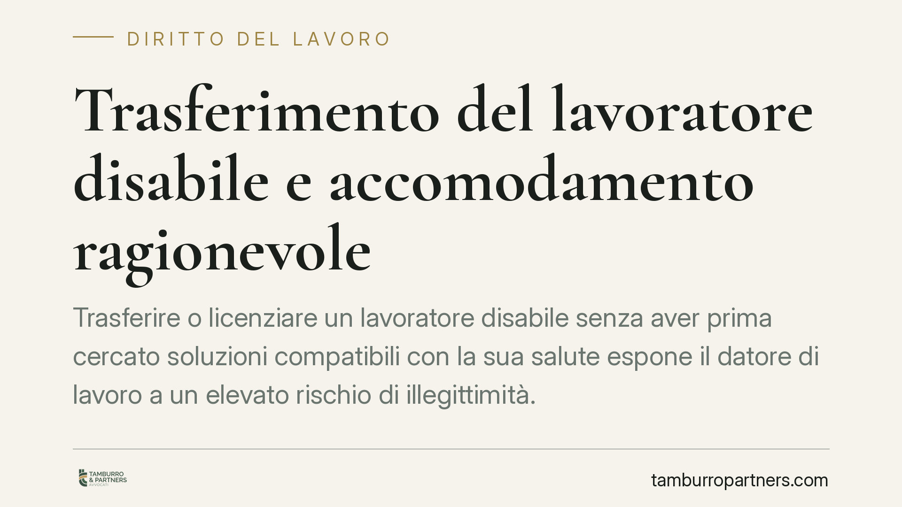

Trasferimento del lavoratore disabile e accomodamento ragionevole
Trasferire o licenziare un lavoratore disabile senza aver prima cercato soluzioni compatibili con la sua salute espone il datore di lavoro a un elevato rischio di illegittimità. La giurisprudenza recente pretende un'istruttoria seria e documentata sull'accomodamento ragionevole. Vediamo quali obblighi gravano sull'azienda e cosa può pretendere il dipendente.

Il fatto e perché conta
La questione ricorre spesso nei tribunali del lavoro: un dipendente con disabilità o con sopraggiunte limitazioni di salute viene trasferito o licenziato perché ritenuto "non più idoneo" alla mansione. Ma quel giudizio di inidoneità, da solo, non basta.
Prima di adottare una misura sfavorevole, il datore di lavoro deve dimostrare di aver esplorato ogni soluzione praticabile per mantenere il lavoratore in servizio. È il principio dell'accomodamento ragionevole, ormai consolidato nella giurisprudenza di legittimità e di merito.
Inquadramento normativo
Il fondamento è la Direttiva UE 2000/78, che vieta le discriminazioni sul lavoro anche per motivi di handicap e impone al datore di lavoro di adottare "soluzioni ragionevoli" per garantire la parità di trattamento delle persone con disabilità.
La direttiva è stata recepita nell'ordinamento italiano e interpretata dalla Corte di Giustizia UE, che ha chiarito come l'accomodamento ragionevole possa comprendere una serie articolata di misure: modifica dell'orario, adattamento della postazione, redistribuzione dei compiti, fino all'assegnazione a mansioni diverse.
La Cassazione Civile e diverse Corti d'appello (tra cui Milano e Venezia) hanno tradotto questo principio in un onere probatorio preciso a carico dell'azienda. Non è il lavoratore a dover indicare la soluzione: è il datore che deve provare di averla cercata e di averla scartata per ragioni oggettive.
L'accomodamento è "ragionevole" quando non impone un onere sproporzionato, valutato in base ai costi, alle dimensioni dell'impresa e alle risorse disponibili. Un limite, quindi, esiste — ma va dimostrato caso per caso, non presunto.
Implicazioni pratiche
Per il datore di lavoro, il messaggio è netto: il trasferimento o il licenziamento per inidoneità sopravvenuta reggono in giudizio solo se preceduti da un'istruttoria seria e tracciabile.
Questo significa verificare in modo documentato l'esistenza di posizioni compatibili con lo stato di salute del dipendente, comprese mansioni inferiori a quelle di provenienza. L'assegnazione a mansioni inferiori, in questo contesto, non è un demansionamento illegittimo: è uno strumento di tutela dell'occupazione previsto dall'ordinamento.
Se l'azienda non prova di aver svolto questa verifica, la misura adottata è illegittima. Ne conseguono, a seconda dei casi, l'annullamento del provvedimento, la reintegrazione o il risarcimento del danno, anche a titolo di discriminazione.
Per il lavoratore disabile, la posizione processuale è più favorevole di quanto spesso si creda. Non è tenuto a suggerire la mansione alternativa: gli basta contestare l'assenza di un'istruttoria adeguata per spostare l'onere della prova sull'azienda.
Attenzione, però: l'obbligo di accomodamento non è illimitato. Se il datore dimostra concretamente l'assenza di posizioni compatibili o la sproporzione dei costi, la misura può risultare legittima. La partita si gioca sulla qualità e sulla completezza della verifica svolta.
Cosa fare in concreto
Se sei un lavoratore con disabilità o limitazioni di salute:
- Chiedi per iscritto al datore quali verifiche ha effettuato sulle mansioni compatibili prima del trasferimento o del licenziamento.
- Conserva ogni comunicazione, certificazione medica e verbale della commissione medica competente.
- Non firmare consensi o rinunce senza aver valutato la loro portata: possono pregiudicare la tutela.
Se sei un datore di lavoro:
- Documenta l'istruttoria: mappa le posizioni disponibili, comprese quelle di livello inferiore, e le ragioni di eventuale incompatibilità.
- Coinvolgi il medico competente e, dove previsto, gli organismi sindacali, formalizzando i passaggi.
- Adotta la misura sfavorevole solo come extrema ratio, dopo aver escluso in modo motivato ogni alternativa.
In entrambi i casi, consigliamo di far valutare la vicenda prima di assumere decisioni definitive: i margini di intervento sono spesso più ampi quando si agisce per tempo, e la tracciabilità delle scelte è determinante nell'eventuale contenzioso.
Disclaimer
Contributo informativo a cura di Tamburro & Partners - Avv. Giuseppe Tamburro. Non costituisce parere legale.
Ogni storia di lavoro ha i suoi tempi.
Se gestisci HR e vuoi un confronto su contenzioso, ispezioni o licenziamenti, scrivi allo studio. Ti rispondiamo entro un giorno lavorativo.